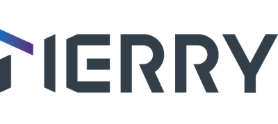

9:41

MERRYLooking for Merry aids...
Make sure your aids are in their case or powered on nearby.
👂
Left aid
👂
Right aid
Merry noticed
All clear
Nothing to flag right now — Merry is listening quietly.
Devices & Comfort
Both connected · Linked
Drag the arc
L
85%
70
avg
R
92%
Both within safe range · 55–85% recommended
You said
Make speech clearer.
Merry checks front speech, nearby noise, and your comfort level before applying a safer setting.
Does this feel better now?
✓
Done.
Merry is holding this setting.
Scene-aware sound
Tell Merry where you are. It decides what to keep and what to soften.
Busy street detected.
Merry keeps vehicle and crossing sounds audible while softening harsh background noise. Safety stays first.
Personal Listening Space
Tap a sound source to pull it closer or push it farther away.
You
Close
Normal
Far
Care
Tell Merry what's going on right now — Merry can help directly, or bring your care team in when you'd like a person involved.
How can Merry help?
Prefer to talk to someone?
Merry bundles your current situation and sends it to your audiologist — no technical explanation needed.
👩⚕️
Dr. Elena
Audiologist · Merry Hearing Clinic
Available today
What Merry will send
🔊
Sound environment
Busy street · front speech nearby
📡
Device status
Both linked · L 85% · R 92%
🎚️
Comfort level
68% — within safe range
📍
Scene
Busy street
✓
Care package sent.
Dr. Elena will review your situation and may follow up today.
Recent activity
What Merry noticed & did
Nothing logged yet — this fills in as Merry notices things and helps you sort them out.
How did that feel?
4 quick questions — helps Merry get better for you.
1. Did Merry support you?
2. Was anything confusing?
3. Did the icons help you understand?
4. Would you use Merry daily?
🎧
Thank you!
Your feedback helps Merry improve. Dr. Elena may also review this session.